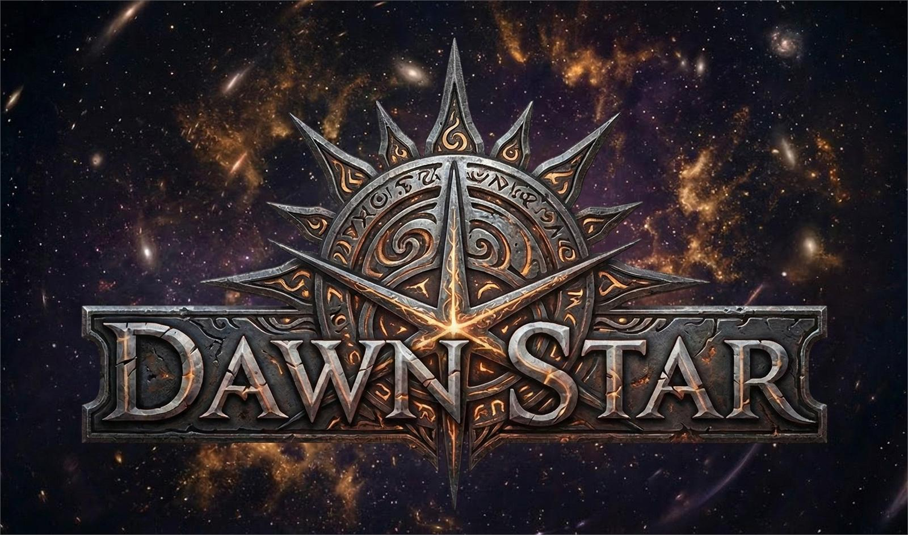
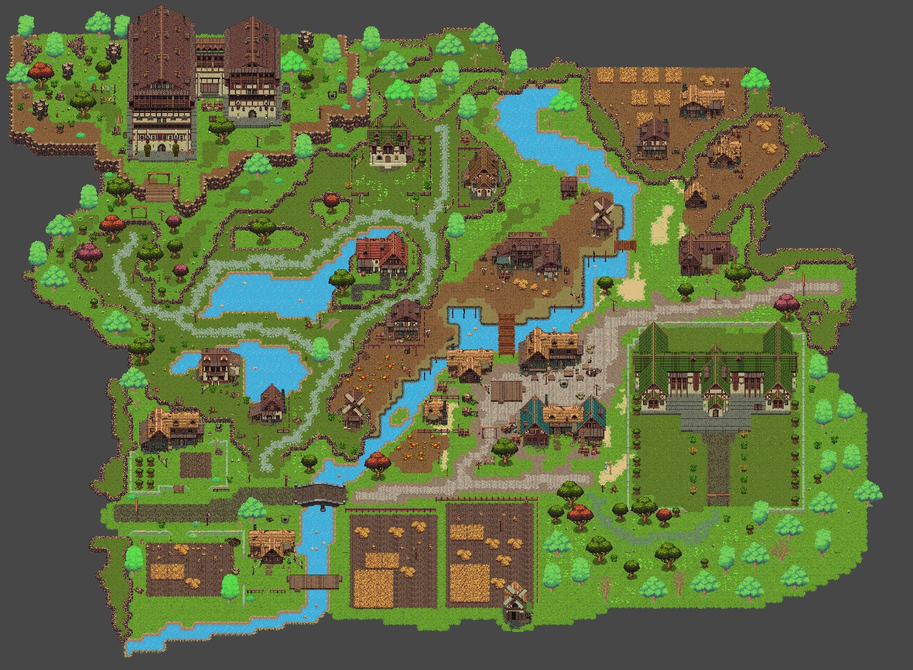

클라이언트
입력·애니메이션, 장비와 스킬 UI, 인벤토리·퀘스트·지도·컷씬을 구현했습니다.
SOLO PROJECT · GAME & SERVER ENGINEERING
싱글 플레이의 몰입감을 살리면서 다른 플레이어와 던전을 공략할 수 있는 RPG를 만들고자 했습니다. 약 6개월 동안 게임 기획부터 클라이언트, 전용 서버, 데이터베이스까지 직접 개발했습니다.

01 / PLAYABLE SYSTEMS
세계를 침식하는 존재인 ‘이빨’을 추적하며 마을과 던전을 탐험하는 2D RPG입니다. 장비에 부여된 스킬을 조합해 전투하고, 파티 매칭을 통해 다른 플레이어와 함께 던전에 입장할 수 있습니다.
클라이언트의 조작과 UI를 만들고, 서버에서 접속한 플레이어의 이동·전투·아이템 정보를 처리했습니다. 로그인해 월드에 입장하고, 전투로 얻은 아이템과 퀘스트 진행 정보를 저장하는 기능까지 구현했습니다.
세계관과 맵 구성도 직접 담당했습니다. 상용 아트 에셋을 활용해 마을과 던전을 구성하고, 월드 지도 등 필요한 리소스를 제작했습니다.
세계관·월드 제작 과정 보기 →입력·애니메이션, 장비와 스킬 UI, 인벤토리·퀘스트·지도·컷씬을 구현했습니다.
접속과 월드 입장, 전투·피해 처리, 주변 객체 동기화, 파티 구성과 던전 매칭을 구현했습니다.
EF Core로 DB 모델과 마이그레이션을 관리했습니다. 아이템·스킬·맵 데이터를 정의하고 각 기능에서 읽어 사용하도록 구성했습니다.
02 / SERVER & PERSISTENCE
여러 플레이어가 서로의 움직임과 전투 결과를 볼 수 있도록 C# 전용 서버를 개발했습니다. 서버는 클라이언트의 요청을 받아 게임 상태를 갱신하고, 캐릭터·아이템·퀘스트 정보를 SQL Server에 저장합니다.
입력 · UI · 애니메이션
요청 전송 / 서버 결과 표시
패킷 처리 · GameRoom · 작업 큐
전투 / 월드 이동 / 주변 객체 전송
캐릭터 · 아이템 · 퀘스트
영속 데이터 저장
계정 인증 서버를 포함한 전체 구성은 개발 과정 페이지에서 볼 수 있습니다.
멀리 떨어진 플레이어에게까지 이동·전투 정보를 보낼 필요는 없다고 판단해, 좌표를 기준으로 패킷을 받을 대상을 제한했습니다.
GameRoom.Broadcast는 인접 Zone에서 플레이어를 모은 뒤, 기준 좌표에서 X·Y 각각 20셀 이내인 대상에게 패킷을 보냅니다. 이를 통해 전송 범위를 월드 전체에서 주변 영역으로 제한했습니다.
주변 객체 목록은 500ms마다 갱신하도록 예약합니다. 새로 보이는 플레이어의 장비 정보는 100ms 뒤에 보내도록 별도로 예약했습니다.
아이템 추가 시 DB 저장이 성공한 뒤 서버의 인벤토리를 갱신하고 클라이언트에 알립니다. 저장되지 않은 아이템을 먼저 획득한 것으로 표시하지 않도록 처리 순서를 정했습니다.
던전 입구에서 매칭을 신청하고, 파티원과 같은 던전에 입장하는 기능을 구현했습니다.
플레이어가 다른 맵으로 이동하면 서버의 소속 룸과 좌표도 바뀌어야 합니다. 기존 룸에서 퇴장시킨 뒤 목적지 정보를 갱신하고, 맵 저장 작업과 목적지 룸의 입장 작업을 각각 큐에 등록했습니다.
03 / COMBAT & PROGRESSION
장비에 부여된 스킬을 사용할 수 있도록 구현했습니다. 플레이어는 장비를 바꿔 사용할 스킬을 선택하고, 보스의 공격을 피하면서 스킬을 사용할 타이밍을 잡습니다.
장비를 바꾸면 UI가 장착 아이템의 Skill 옵션을 읽고 무기·투구·장신구 슬롯을 갱신합니다. 플레이어가 해당 슬롯을 사용하면 연결된 SkillId가 서버 요청 패킷으로 전달됩니다.
예를 들어 스킬이 부여된 장신구를 착용하면 해당 스킬이 단축키 슬롯에 표시됩니다. 장비를 교체하면 슬롯도 함께 갱신됩니다.
연속 공격의 타격 시점을 terms 목록으로 정의했습니다. 서버의 CombatAsync는 각 타격 사이의 간격을 공격속도로 보정한 뒤 대상에 피해를 적용합니다. 스킬마다 타격 횟수와 간격을 데이터에서 바꿀 수 있도록 구현했습니다.
코드: Skill_Attack · CombatAsync / GameRoom_Battle · 스킬 요청과 피해 계산
플레이어 가까이에서 빠르게 공격하는 패턴과 넓은 범위를 광선으로 공격하는 패턴을 제작했습니다. 아래 영상은 각 보스의 공격 동작을 보여줍니다.
보유한 재료를 사용해 장비를 강화하는 기능과 아이템을 관리하는 인벤토리를 구현했습니다. 강화 화면에서는 대상 장비와 필요한 재료를, 인벤토리에서는 아이템 목록과 상세 정보를 확인할 수 있습니다.
04 / WORLD & QUESTS
마을과 던전을 구성하고, 탐험에 필요한 지도와 퀘스트 UI를 구현했습니다. 대화와 퀘스트를 통해 이야기가 진행되도록 콘텐츠를 제작했습니다.

05 / PROTOCOL TOOLING
패킷을 추가할 때마다 클라이언트와 서버의 등록 코드를 수정하는 작업이 반복됐습니다. 프로토콜 정의를 읽어 양쪽 코드를 생성하는 도구를 만들고, 송신 과정에서 반복하던 ID 변환과 버퍼 복사도 줄였습니다.
메시지 ID 정의를 파싱해 클라이언트·서버의 PacketManager와 ID 조회용 코드를 함께 생성합니다.
송신할 때 패킷 이름을 매번 enum으로 변환하던 코드를 MsgIdCache에서 ID를 조회하는 방식으로 바꿨습니다.
직렬화 결과를 임시 배열에 담았다가 복사하던 방식을 바꿔, 최종 송신 버퍼의 헤더 다음 위치에 직접 기록합니다.
코드: PacketGenerator / ClientSession · Send
같은 Zone에 더미 클라이언트 10개를 접속한 테스트에서는 평균 틱 시간이 약 18ms에서 6ms로 줄었습니다. 개발 당시 기록한 수치이며, 원시 로그와 실행 조건을 충분히 남기지 않아 동일 조건에서 다시 측정할 필요가 있습니다.
송신 코드에서 제거한 것은 임시 페이로드 배열과 복사 단계입니다. 최종 송신 버퍼와 스트림 객체는 여전히 생성됩니다.
자료: README의 개발 기록 / 패킷 파이프라인 개선 보고서
06 / REFLECTION
클라이언트와 서버를 함께 개발하면서, 기능마다 데이터가 처리되는 순서를 구체적으로 살펴볼 수 있었습니다. 아이템 획득만 해도 DB 저장, 서버 인벤토리 갱신, 클라이언트 알림을 어떤 순서로 처리할지 함께 고려해야 했습니다.
처음에는 대규모 RPG를 목표로 했지만, 개발을 진행하면서 개인의 탐험과 전투를 먼저 구현하는 데 집중했습니다. 여기에 파티와 던전 매칭을 추가해 다른 플레이어와 함께하는 기능을 만들었습니다.
기능 구현에 집중한 만큼 예외 상황에 대한 테스트는 부족했습니다. 전투 중 맵을 이동하거나 DB 저장에 실패했을 때의 처리, 시야 경계에서 객체가 나타나고 사라지는 동작을 더 점검해야 합니다. 동시 접속 규모를 늘린 부하 시험도 필요합니다.
구현 설명과 코드 링크는 공개 저장소의 b997fc4 커밋을 기준으로 작성했습니다.